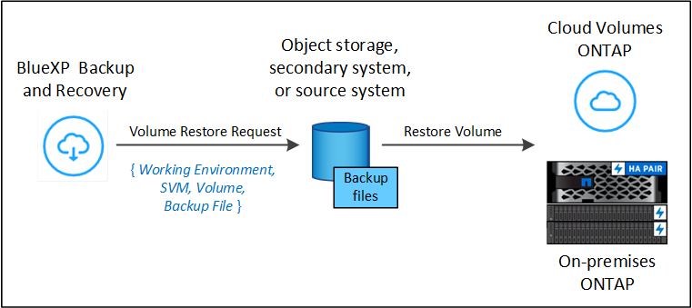
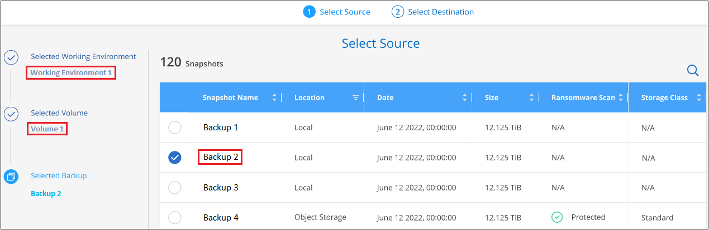
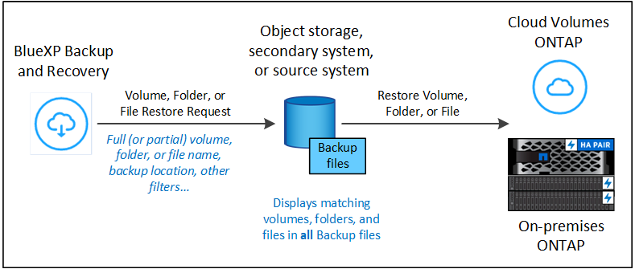

Amazon Web Services
Amazon Web Services
 Google Cloud
Google Cloud
 Microsoft Azure
Microsoft Azure
 Richiedi modifiche alla documentazione
Richiedi modifiche alla documentazione Modifica questa pagina
Modifica questa pagina Scopri come collaborare
Scopri come collaborareRipristinare i dati ONTAP dai file di backup
Collaboratori
I backup dei dati del volume ONTAP sono disponibili dalle posizioni in cui sono stati creati i backup: Copie Snapshot, volumi replicati e backup memorizzati nello storage a oggetti. È possibile ripristinare i dati da un punto specifico in una qualsiasi di queste posizioni di backup. È possibile ripristinare un intero volume ONTAP da un file di backup oppure, se è necessario ripristinare solo alcuni file, è possibile ripristinare una cartella o singoli file.
È possibile ripristinare un volume (come nuovo volume) nell’ambiente di lavoro originale, in un ambiente di lavoro diverso che utilizza lo stesso account cloud o in un sistema ONTAP on-premise.
È possibile ripristinare una cartella in un volume nell’ambiente di lavoro originale, in un volume in un ambiente di lavoro diverso che utilizza lo stesso account cloud o in un volume su un sistema ONTAP on-premise.
È possibile ripristinare file in un volume nell’ambiente di lavoro originale, in un volume in un ambiente di lavoro diverso che utilizza lo stesso account cloud o in un volume su un sistema ONTAP on-premise.
Per ripristinare i dati dai file di backup a un sistema di produzione, è necessaria una licenza di backup e ripristino BlueXP valida.
In sintesi, questi sono i flussi validi che è possibile utilizzare per ripristinare i dati dei volumi in un ambiente di lavoro ONTAP:
-
File di backup → volume ripristinato
-
Volume replicato → volume ripristinato
-
Copia Snapshot → Volume ripristinato
La dashboard di ripristino
La dashboard di ripristino consente di eseguire operazioni di ripristino di volumi, cartelle e file. Per accedere alla dashboard di ripristino, fare clic su Backup and Recovery dal menu BlueXP, quindi fare clic sulla scheda Restore. È anche possibile fare clic su  > Visualizza dashboard di ripristino dal servizio di backup e ripristino dal pannello servizi.
> Visualizza dashboard di ripristino dal servizio di backup e ripristino dal pannello servizi.

|
Il backup e il ripristino di BlueXP devono essere già attivati per almeno un ambiente di lavoro e devono esistere file di backup iniziali. |

Come si può vedere, la dashboard di ripristino offre due diversi modi per ripristinare i dati dai file di backup: Browse & Restore e Search & Restore.
Confronto tra Browse & Restore e Search & Restore
In termini generali, Browse & Restore è in genere migliore quando è necessario ripristinare un volume, una cartella o un file specifico dell’ultima settimana o mese, e si conoscono il nome e la posizione del file e la data dell’ultima volta in buone condizioni. La funzione Search & Restore è generalmente migliore quando è necessario ripristinare un volume, una cartella o un file, ma non si ricorda il nome esatto, il volume in cui risiede o la data in cui si trovava l’ultima volta.
Questa tabella fornisce un confronto tra le funzionalità dei 2 metodi.
| Sfoglia e ripristina | Ricerca e ripristino |
|---|---|
Sfogliare una struttura in stile cartella per trovare il volume, la cartella o il file all’interno di un singolo file di backup |
Cercare un volume, una cartella o un file in tutti i file di backup in base al nome del volume parziale o completo, al nome di cartella o file completo, all’intervallo di dimensioni e ai filtri di ricerca aggiuntivi |
Non gestisce il ripristino del file se il file è stato cancellato o rinominato e l’utente non conosce il nome del file originale |
Gestisce le directory appena create/eliminate/rinominate e i file appena creati/cancellati/rinominati |
Non sono richieste risorse aggiuntive per i cloud provider |
Durante il ripristino dal cloud, sono necessarie risorse aggiuntive per bucket e provider di cloud pubblico per account |
Non sono richiesti costi aggiuntivi per i cloud provider |
Quando si esegue il ripristino dal cloud, sono necessari costi aggiuntivi per la scansione dei backup e dei volumi per i risultati della ricerca |
Questa tabella fornisce un elenco di operazioni di ripristino valide in base alla posizione in cui si trovano i file di backup.
| Tipo di backup | Sfoglia e ripristina | Ricerca e ripristino | ||||
|---|---|---|---|---|---|---|
Volume di ripristino |
Ripristinare i file |
Cartella di ripristino |
Volume di ripristino |
Ripristinare i file |
Cartella di ripristino |
|
Copia Snapshot |
Sì |
No |
No |
Sì |
Sì |
No |
Volume replicato |
Sì |
No |
No |
Sì |
Sì |
No |
File di backup |
Sì |
Sì |
Sì |
Sì |
Sì |
Sì |
Prima di utilizzare uno dei due metodi di ripristino, assicurarsi di aver configurato l’ambiente in base ai requisiti delle risorse univoci. Tali requisiti sono descritti nelle sezioni seguenti.
Consultare i requisiti e le procedure di ripristino per il tipo di operazione di ripristino che si desidera utilizzare:
-
<<Restoring volumes using Browse & Restore,Ripristinare i volumi utilizzando Sfoglia Ripristina
-
<<Restoring folders and files using Browse & Restore,Ripristinare cartelle e file utilizzando Sfoglia Ripristina
-
<<Restoring ONTAP data using Search & Restore,Ripristinare volumi, cartelle e file utilizzando Search Restore
Ripristinare i dati ONTAP utilizzando Sfoglia e ripristina
Prima di iniziare il ripristino di un volume, di una cartella o di un file, è necessario conoscere il nome del volume da cui si desidera eseguire il ripristino, il nome dell’ambiente di lavoro, la SVM in cui si trova il volume e la data approssimativa del file di backup da cui si desidera eseguire il ripristino. È possibile ripristinare i dati ONTAP da una copia Snapshot, un volume replicato o da backup memorizzati nello storage a oggetti.
Nota: se il file di backup contenente i dati che si desidera ripristinare risiede nello storage cloud di archiviazione (a partire da ONTAP 9.10.1), l’operazione di ripristino richiederà più tempo e comporterà un costo. Inoltre, il cluster di destinazione deve eseguire ONTAP 9.10.1 o superiore per il ripristino del volume, 9.11.1 per il ripristino dei file, 9.12.1 per Google Archive e StorageGRID e 9.13.1 per il ripristino delle cartelle.
|
|
La priorità alta non è supportata quando si ripristinano i dati dallo storage di archivio Azure ai sistemi StorageGRID. |
Sfoglia e ripristina gli ambienti di lavoro supportati e i provider di storage a oggetti
È possibile ripristinare i dati ONTAP da un file di backup che risiede in un ambiente di lavoro secondario (un volume replicato) o nello storage a oggetti (un file di backup) nei seguenti ambienti di lavoro. Le copie Snapshot risiedono nell’ambiente di lavoro di origine e possono essere ripristinate solo sullo stesso sistema.
Nota: è possibile ripristinare un volume da qualsiasi tipo di file di backup, ma è possibile ripristinare una cartella o singoli file solo da un file di backup nello storage a oggetti in questo momento.
| Percorso del file di backup | Ambiente di lavoro di destinazione | |
|---|---|---|
Archivio oggetti (backup) |
Sistema secondario (replica) |
ifdef::aws[] |
Amazon S3 |
Cloud Volumes ONTAP in AWS |
Cloud Volumes ONTAP in AWS on-premise ONTAP system endif::aws[] ifdef::Azure[] |
Azure Blob |
Cloud Volumes ONTAP in Azure |
Cloud Volumes ONTAP in Azure on-premise ONTAP system endif::Azure[] ifdef::gcp[] |
Storage Google Cloud |
Cloud Volumes ONTAP in Google |
Cloud Volumes ONTAP in Google on-premise ONTAP system endif::gcp[] |
NetApp StorageGRID |
Sistema ONTAP on-premise |
Sistema ONTAP on-premise |
Per Browse & Restore, il connettore può essere installato nei seguenti percorsi:
-
Per Amazon S3, il connettore può essere implementato in AWS o in sede
-
Per StorageGRID, il connettore deve essere implementato in sede, con o senza accesso a Internet
Si noti che i riferimenti ai "sistemi ONTAP on-premise" includono i sistemi FAS, AFF e ONTAP Select.
|
|
Se la versione di ONTAP sul sistema è inferiore alla 9.13.1, non è possibile ripristinare cartelle o file se il file di backup è stato configurato con DataLock & ransomware. In questo caso, è possibile ripristinare l’intero volume dal file di backup e quindi accedere ai file necessari. |
Ripristinare i volumi utilizzando Sfoglia & Ripristina
Quando si ripristina un volume da un file di backup, il backup e ripristino di BlueXP crea un nuovo volume utilizzando i dati del backup. Quando si utilizza un backup nel cloud, è possibile ripristinare i dati in un volume nell’ambiente di lavoro originale o in un ambiente di lavoro diverso che si trova nello stesso account cloud dell’ambiente di lavoro di origine. È inoltre possibile ripristinare i volumi su un sistema ONTAP on-premise.
Quando si esegue il ripristino da un volume replicato, è possibile ripristinare il volume nell’ambiente di lavoro originale o in un sistema Cloud Volumes ONTAP o ONTAP on-premise.

Come si può vedere, è necessario conoscere il nome dell’ambiente di lavoro di origine, la VM di storage, il nome del volume e la data del file di backup per eseguire un ripristino del volume.
Il seguente video mostra una breve panoramica del ripristino di un volume:
-
Dal menu BlueXP, selezionare protezione > Backup e ripristino.
-
Fare clic sulla scheda Restore per visualizzare la dashboard di ripristino.
-
Nella sezione Browse & Restore, fare clic su Restore Volume (Ripristina volume).

-
Nella pagina Select Source, accedere al file di backup del volume che si desidera ripristinare. Selezionare il file Working Environment (ambiente di lavoro), Volume (Volume) e Backup con la data e l’ora da cui si desidera eseguire il ripristino.
La colonna percorso indica se il file di backup (Snapshot) è locale (una copia Snapshot sul sistema di origine), secondario (un volume replicato su un sistema ONTAP secondario) o archiviazione oggetto (un file di backup nello storage a oggetti). Scegliere il file che si desidera ripristinare.

-
Fare clic su Avanti.
Si noti che se si seleziona un file di backup nello storage a oggetti e la protezione ransomware è attiva per tale backup (se sono stati attivati DataLock e ransomware Protection nel criterio di backup), viene richiesto di eseguire un’ulteriore scansione ransomware sul file di backup prima di ripristinare i dati. Si consiglia di eseguire la scansione del file di backup per il ransomware.
-
Nella pagina Select Destination, selezionare Working Environment (ambiente di lavoro) in cui si desidera ripristinare il volume.

-
Quando si ripristina un file di backup dallo storage a oggetti, se si seleziona un sistema ONTAP on-premise e non si è ancora configurata la connessione del cluster allo storage a oggetti, vengono richieste ulteriori informazioni:
-
Quando si esegue il ripristino da Amazon S3, selezionare IPSpace nel cluster ONTAP in cui si trova il volume di destinazione, immettere la chiave di accesso e la chiave segreta per l’utente creato per consentire al cluster ONTAP di accedere al bucket S3, E, se lo si desidera, scegliere un endpoint VPC privato per il trasferimento sicuro dei dati.
-
Quando si esegue il ripristino da StorageGRID, immettere l’FQDN del server StorageGRID e la porta che ONTAP deve utilizzare per la comunicazione HTTPS con StorageGRID, selezionare la chiave di accesso e la chiave segreta necessarie per accedere allo storage a oggetti e l’IPSpace nel cluster ONTAP in cui risiede il volume di destinazione.
-
Immettere il nome da utilizzare per il volume ripristinato e selezionare Storage VM (VM di archiviazione) e aggregate (aggregato) in cui si trova il volume. Quando si ripristina un volume FlexGroup, è possibile scegliere più aggregati. Per impostazione predefinita, il nome del volume è <source_volume_name>_restore.

-
Se si sta ripristinando il volume da un file di backup che risiede in un Tier di storage di archiviazione (disponibile a partire da ONTAP 9.10.1), è possibile selezionare la priorità di ripristino.
-
-
-
Fare clic su Restore (Ripristina) per tornare alla dashboard di ripristino, in modo da esaminare l’avanzamento dell’operazione di ripristino.
Il backup e ripristino BlueXP crea un nuovo volume in base al backup selezionato.
Il ripristino di un volume da un file di backup che risiede nello storage di archiviazione può richiedere molti minuti o ore, a seconda del livello di archiviazione e della priorità di ripristino. Fare clic sulla scheda Job Monitoring per visualizzare l’avanzamento del ripristino.
Ripristinare cartelle e file utilizzando Sfoglia & Ripristina
Se è necessario ripristinare solo alcuni file da un backup di un volume ONTAP, è possibile scegliere di ripristinare una cartella o singoli file invece di ripristinare l’intero volume. È possibile ripristinare cartelle e file in un volume esistente nell’ambiente di lavoro originale o in un ambiente di lavoro diverso che utilizza lo stesso account cloud. È inoltre possibile ripristinare cartelle e file in un volume su un sistema ONTAP on-premise.
Nota: al momento è possibile ripristinare una cartella o singoli file solo da un file di backup nello storage a oggetti. Il ripristino di file e cartelle non è attualmente supportato da una copia Snapshot locale o da un file di backup che risiede in un ambiente di lavoro secondario (un volume replicato).
Se si selezionano più file, tutti i file vengono ripristinati nello stesso volume di destinazione scelto. Quindi, se si desidera ripristinare i file in volumi diversi, è necessario eseguire il processo di ripristino più volte.
Quando si utilizza ONTAP 9.13.0 o versione successiva, è possibile ripristinare una cartella insieme a tutti i file e le sottocartelle all’interno di essa. Quando si utilizza una versione di ONTAP precedente alla 9.13.0, vengono ripristinati solo i file di tale cartella, non vengono ripristinate sottocartelle o file in sottocartelle.
|
|
|
Prerequisiti
-
La versione di ONTAP deve essere 9.6 o superiore per eseguire le operazioni di ripristino di file.
-
La versione di ONTAP deve essere 9.11.1 o superiore per eseguire le operazioni di ripristino della cartella. ONTAP versione 9.13.1 è richiesto se i dati si trovano nello storage di archiviazione o se il file di backup utilizza DataLock e la protezione ransomware.
Processo di ripristino di cartelle e file
Il processo è simile al seguente:
-
Per ripristinare una cartella o uno o più file da un backup di volume, fare clic sulla scheda Restore (Ripristina) e fare clic su Restore Files or Folder (Ripristina file o cartella) in Browse & Restore (Sfoglia e ripristina).
-
Selezionare l’ambiente di lavoro di origine, il volume e il file di backup in cui risiedono le cartelle o i file.
-
BlueXP backup and recovery (Backup e ripristino BlueXP): Visualizza le cartelle e i file presenti nel file di backup selezionato.
-
Selezionare la cartella o i file che si desidera ripristinare dal backup.
-
Selezionare il percorso di destinazione in cui si desidera ripristinare la cartella o i file (ambiente di lavoro, volume e cartella) e fare clic su Restore (Ripristina).
-
I file vengono ripristinati.

Come si può vedere, è necessario conoscere il nome dell’ambiente di lavoro, il nome del volume, la data del file di backup e il nome della cartella/file per eseguire il ripristino di una cartella o di un file.
Ripristinare cartelle e file
Per ripristinare cartelle o file su un volume da un backup di un volume ONTAP, procedere come segue. È necessario conoscere il nome del volume e la data del file di backup che si desidera utilizzare per ripristinare la cartella o i file. Questa funzionalità utilizza la funzione Live Browsing per visualizzare l’elenco delle directory e dei file all’interno di ciascun file di backup.
Il video seguente mostra una rapida procedura dettagliata per il ripristino di un singolo file:
-
Dal menu BlueXP, selezionare protezione > Backup e ripristino.
-
Fare clic sulla scheda Restore per visualizzare la dashboard di ripristino.
-
Nella sezione Browse & Restore, fare clic su Restore Files or Folder (Ripristina file o cartella).

-
Nella pagina Select Source, accedere al file di backup del volume che contiene la cartella o i file da ripristinare. Selezionare l’opzione Working Environment (ambiente di lavoro), Volume (Volume) e Backup con la data/ora da cui si desidera ripristinare i file.

-
Fare clic su Avanti per visualizzare l’elenco delle cartelle e dei file del backup del volume.
Se si ripristinano cartelle o file da un file di backup che risiede in un livello di storage di archiviazione, è possibile selezionare la priorità di ripristino.
+ e se la protezione ransomware è attiva per il file di backup (se sono stati attivati DataLock e ransomware Protection nella policy di backup), viene richiesto di eseguire un’ulteriore scansione ransomware sul file di backup prima di ripristinare i dati. Si consiglia di eseguire la scansione del file di backup per il ransomware.
+
-
Nella pagina Select ITEMS, selezionare la cartella o i file che si desidera ripristinare e fare clic su Continue (continua). Per assistenza nella ricerca dell’elemento:
-
È possibile fare clic sul nome della cartella o del file, se visualizzato.
-
È possibile fare clic sull’icona di ricerca e immettere il nome della cartella o del file per accedere direttamente all’elemento.
-
È possibile scorrere i livelli delle cartelle in basso utilizzando
 alla fine della riga per trovare file specifici.
alla fine della riga per trovare file specifici.Quando si selezionano i file, questi vengono aggiunti alla parte sinistra della pagina in modo da visualizzare i file già selezionati. Se necessario, è possibile rimuovere un file da questo elenco facendo clic sulla * x* accanto al nome del file.
-
-
Nella pagina Select Destination (Seleziona destinazione), selezionare Working Environment (ambiente di lavoro) in cui si desidera ripristinare gli elementi.

Se si seleziona un cluster on-premise e non si è ancora configurata la connessione del cluster allo storage a oggetti, vengono richieste ulteriori informazioni:
-
Quando si esegue il ripristino da Amazon S3, inserire IPSpace nel cluster ONTAP in cui si trova il volume di destinazione e la chiave di accesso AWS e la chiave segreta necessarie per accedere allo storage a oggetti. È inoltre possibile selezionare una configurazione di collegamento privato per la connessione al cluster.
-
Quando si esegue il ripristino da StorageGRID, immettere l’FQDN del server StorageGRID e la porta che ONTAP deve utilizzare per la comunicazione HTTPS con StorageGRID, immettere la chiave di accesso e la chiave segreta necessarie per accedere allo storage a oggetti e l’IPSpace nel cluster ONTAP in cui risiede il volume di destinazione.
-
Quindi selezionare il Volume e la cartella in cui si desidera ripristinare la cartella o i file.

-
-
Sono disponibili alcune opzioni per la posizione durante il ripristino di cartelle e file.
-
Una volta selezionato Select Target Folder (Seleziona cartella di destinazione), come mostrato sopra:
-
È possibile selezionare qualsiasi cartella.
-
È possibile passare il mouse su una cartella e fare clic su
alla fine della riga per eseguire il drill-down nelle sottocartelle, quindi selezionare una cartella.
-
-
Se sono stati selezionati lo stesso ambiente di lavoro di destinazione e lo stesso volume in cui si trovava la cartella o il file di origine, è possibile selezionare Mantieni percorso cartella di origine per ripristinare la cartella o i file nella stessa cartella in cui erano presenti nella struttura di origine. Tutte le stesse cartelle e sottocartelle devono già esistere; le cartelle non vengono create. Quando si ripristinano i file nella posizione originale, è possibile scegliere di sovrascrivere i file di origine o di creare nuovi file.
-
Fare clic su Restore (Ripristina) per tornare alla dashboard di ripristino, in modo da esaminare l’avanzamento dell’operazione di ripristino. È inoltre possibile fare clic sulla scheda Job Monitoring per visualizzare l’avanzamento del ripristino.
-
-
Ripristino dei dati ONTAP mediante Ricerca e ripristino
È possibile ripristinare un volume, una cartella o file da un file di backup di ONTAP utilizzando Ricerca e ripristino. Search & Restore (Ricerca e ripristino) consente di cercare un volume, una cartella o un file specifico da tutti i backup, quindi di eseguire un ripristino. Non è necessario conoscere il nome esatto dell’ambiente di lavoro, il nome del volume o il nome del file: La ricerca esamina tutti i file di backup dei volumi.
L’operazione di ricerca analizza tutte le copie Snapshot locali esistenti per i volumi ONTAP, tutti i volumi replicati sui sistemi di storage secondari e tutti i file di backup presenti nello storage a oggetti. Poiché il ripristino dei dati da una copia Snapshot locale o da un volume replicato può essere più rapido e meno costoso del ripristino da un file di backup nello storage a oggetti, è possibile ripristinare i dati da queste altre posizioni.
Quando si ripristina un volume da un file di backup, il backup e ripristino di BlueXP crea un nuovo volume utilizzando i dati del backup. È possibile ripristinare i dati come volume nell’ambiente di lavoro originale o in un ambiente di lavoro diverso che si trova nello stesso account cloud dell’ambiente di lavoro di origine. È inoltre possibile ripristinare i volumi su un sistema ONTAP on-premise.
È possibile ripristinare cartelle o file nella posizione originale del volume, in un volume diverso nello stesso ambiente di lavoro o in un ambiente di lavoro diverso che utilizza lo stesso account cloud. È inoltre possibile ripristinare cartelle e file in un volume su un sistema ONTAP on-premise.
Quando si utilizza ONTAP 9.13.0 o versione successiva, è possibile ripristinare una cartella insieme a tutti i file e le sottocartelle all’interno di essa. Quando si utilizza una versione di ONTAP precedente alla 9.13.0, vengono ripristinati solo i file di tale cartella, non vengono ripristinate sottocartelle o file in sottocartelle.
Se il file di backup per il volume che si desidera ripristinare risiede nello storage di archiviazione (disponibile a partire da ONTAP 9.10.1), l’operazione di ripristino richiederà più tempo e comporterà costi aggiuntivi. Tenere presente che il cluster di destinazione deve eseguire anche ONTAP 9.10.1 o versione successiva per il ripristino del volume, 9.11.1 per il ripristino dei file, 9.12.1 per Google Archive e StorageGRID e 9.13.1 per il ripristino delle cartelle.
|
|
|
Prima di iniziare, si dovrebbe avere un’idea del nome o della posizione del volume o del file che si desidera ripristinare.
Il video seguente mostra una rapida procedura dettagliata per il ripristino di un singolo file:
Search & Restore ambienti di lavoro supportati e provider di storage a oggetti
È possibile ripristinare i dati ONTAP da un file di backup che risiede in un ambiente di lavoro secondario (un volume replicato) o nello storage a oggetti (un file di backup) nei seguenti ambienti di lavoro. Le copie Snapshot risiedono nell’ambiente di lavoro di origine e possono essere ripristinate solo sullo stesso sistema.
Nota: è possibile ripristinare volumi e file da qualsiasi tipo di file di backup, ma è possibile ripristinare una cartella solo dai file di backup nello storage a oggetti in questo momento.
| Percorso del file di backup | Ambiente di lavoro di destinazione | |
|---|---|---|
Archivio oggetti (backup) |
Sistema secondario (replica) |
ifdef::aws[] |
Amazon S3 |
Cloud Volumes ONTAP in AWS |
Cloud Volumes ONTAP in AWS on-premise ONTAP system endif::aws[] ifdef::Azure[] |
Azure Blob |
Cloud Volumes ONTAP in Azure |
Cloud Volumes ONTAP in Azure on-premise ONTAP system endif::Azure[] ifdef::gcp[] |
Storage Google Cloud |
Cloud Volumes ONTAP in Google |
Cloud Volumes ONTAP in Google on-premise ONTAP system endif::gcp[] |
NetApp StorageGRID |
Sistema ONTAP on-premise |
Sistema ONTAP on-premise |
Per Search & Restore, il connettore può essere installato nelle seguenti posizioni:
-
Per Amazon S3, il connettore può essere implementato in AWS o in sede
-
Per StorageGRID, il connettore deve essere implementato in sede, con o senza accesso a Internet
Si noti che i riferimenti ai "sistemi ONTAP on-premise" includono i sistemi FAS, AFF e ONTAP Select.
Prerequisiti
-
Requisiti del cluster:
-
La versione di ONTAP deve essere 9.8 o superiore.
-
La VM di storage (SVM) su cui risiede il volume deve avere una LIF di dati configurata.
-
NFS deve essere attivato sul volume (sono supportati sia i volumi NFS che SMB/CIFS).
-
SnapDiff RPC Server deve essere attivato su SVM. BlueXP esegue questa operazione automaticamente quando si attiva l’indicizzazione nell’ambiente di lavoro. (SnapDiff è la tecnologia che identifica rapidamente le differenze di file e directory tra le copie Snapshot).
-
-
Requisiti AWS:
-
Le autorizzazioni specifiche di Amazon Athena, AWS Glue e AWS S3 devono essere aggiunte al ruolo utente che fornisce a BlueXP le autorizzazioni necessarie. "Assicurarsi che tutte le autorizzazioni siano configurate correttamente".
Se si utilizzava già il backup e ripristino BlueXP con un connettore configurato in passato, è necessario aggiungere ora le autorizzazioni Athena e Glue al ruolo utente BlueXP. Sono necessari per la ricerca e il ripristino.
-
-
Requisiti StorageGRID:
A seconda della configurazione, sono disponibili 2 modi per implementare Search & Restore:
-
Se non sono presenti credenziali del provider cloud nell’account, le informazioni del catalogo indicizzate vengono memorizzate nel connettore.
-
Se si utilizza un connettore in un sito privato (scuro), le informazioni del catalogo indicizzate vengono memorizzate nel connettore (richiede la versione 3.9.25 o superiore del connettore).
-
Se lo hai fatto "Credenziali AWS" oppure "Credenziali Azure" Nell’account, il catalogo indicizzato viene memorizzato presso il cloud provider, proprio come con un connettore implementato nel cloud. (Se si dispone di entrambe le credenziali, AWS è selezionato per impostazione predefinita).
Anche se si utilizza un connettore on-premise, i requisiti del cloud provider devono essere soddisfatti sia per le autorizzazioni dei connettori che per le risorse del cloud provider. Per l’utilizzo di questa implementazione, vedere i requisiti AWS e Azure riportati sopra.
-
Processo di ricerca e ripristino
Il processo è simile al seguente:
-
Prima di utilizzare Search & Restore, è necessario attivare l’indicizzazione su ogni ambiente di lavoro di origine da cui si desidera ripristinare i dati dei volumi. Questo consente al catalogo indicizzato di tenere traccia dei file di backup per ogni volume.
-
Se si desidera ripristinare uno o più file da un backup di un volume, in Search & Restore, fare clic su Search & Restore (Ricerca e ripristino).
-
Immettere i criteri di ricerca per un volume, una cartella o un file in base al nome del volume parziale o completo, al nome del file completo o parziale, alla posizione di backup, all’intervallo di dimensioni, all’intervallo di date di creazione, ad altri filtri di ricerca, E fare clic su Cerca.
La pagina risultati ricerca visualizza tutte le posizioni in cui è presente un file o un volume corrispondente ai criteri di ricerca.
-
Fare clic su View All backups (Visualizza tutti i backup) per la posizione che si desidera utilizzare per ripristinare il volume o il file, quindi fare clic su Restore (Ripristina) nel file di backup effettivo che si desidera utilizzare.
-
Selezionare la posizione in cui si desidera ripristinare il volume, la cartella o i file e fare clic su Restore (Ripristina).
-
Il volume, la cartella o i file vengono ripristinati.

Come si può vedere, è sufficiente conoscere un nome parziale e le ricerche di backup e ripristino di BlueXP attraverso tutti i file di backup che corrispondono alla ricerca.
Abilitare il catalogo indicizzato per ogni ambiente di lavoro
Prima di utilizzare Search & Restore, è necessario attivare l’indicizzazione su ogni ambiente di lavoro di origine da cui si intende ripristinare volumi o file. Questo consente al catalogo indicizzato di tenere traccia di ogni volume e di ogni file di backup, rendendo le ricerche molto rapide ed efficienti.
Quando si attiva questa funzionalità, il backup e ripristino di BlueXP attiva SnapDiff v3 sulla SVM per i volumi ed esegue le seguenti operazioni:
-
Per i backup memorizzati in AWS, fornisce un nuovo bucket S3 e il "Servizio di query interattiva Amazon Athena" e. "Servizio di integrazione dei dati senza server AWS Glue".
-
Per i backup memorizzati in StorageGRID, fornisce spazio sul connettore o sull’ambiente del cloud provider.
Se l’indicizzazione è già stata attivata per l’ambiente di lavoro, passare alla sezione successiva per ripristinare i dati.
Per attivare l’indicizzazione per un ambiente di lavoro:
-
Se non sono stati indicizzati ambienti di lavoro, nella dashboard di ripristino in Search & Restore, fare clic su Enable Indexing for Working Environments (attiva indicizzazione per ambienti di lavoro) e fare clic su Enable Indexing (attiva indicizzazione) per l’ambiente di lavoro.
-
Se almeno un ambiente di lavoro è già stato indicizzato, nella dashboard di ripristino in Search & Restore, fare clic su Indexing Settings (Impostazioni di indicizzazione) e fare clic su Enable Indexing (attiva indicizzazione) per l’ambiente di lavoro.
Una volta eseguito il provisioning di tutti i servizi e attivato il catalogo indicizzato, l’ambiente di lavoro viene visualizzato come "attivo".

A seconda delle dimensioni dei volumi nell’ambiente di lavoro e del numero di file di backup in tutte e 3 le posizioni di backup, il processo di indicizzazione iniziale potrebbe richiedere fino a un’ora. Successivamente, viene aggiornato in modo trasparente ogni ora con modifiche incrementali per rimanere aggiornato.
Ripristinare volumi, cartelle e file utilizzando Search & Restore
Dopo di che Indicizzazione abilitata per l’ambiente di lavoro, È possibile ripristinare volumi, cartelle e file utilizzando Search & Restore. In questo modo, è possibile utilizzare un’ampia gamma di filtri per individuare il file o il volume esatto che si desidera ripristinare da tutti i file di backup.
-
Dal menu BlueXP, selezionare protezione > Backup e ripristino.
-
Fare clic sulla scheda Restore per visualizzare la dashboard di ripristino.
-
Nella sezione Search & Restore, fare clic su Search & Restore.

-
Dalla pagina Search to Restore (Cerca per il ripristino):
-
Nella barra di ricerca, immettere un nome completo o parziale del volume, del nome della cartella o del file.
-
Selezionare il tipo di risorsa: Volumi, file, cartelle o tutto.
-
Nell’area Filtra per, selezionare i criteri di filtro. Ad esempio, è possibile selezionare l’ambiente di lavoro in cui risiedono i dati e il tipo di file, ad esempio un file .JPEG. In alternativa, è possibile selezionare il tipo di percorso di backup se si desidera cercare i risultati solo all’interno delle copie Snapshot o dei file di backup disponibili nello storage a oggetti.
-
-
Fare clic su Cerca e nell’area risultati ricerca vengono visualizzate tutte le risorse che hanno un file, una cartella o un volume corrispondente alla ricerca.

-
Individuare la risorsa contenente i dati da ripristinare e fare clic su View All backups (Visualizza tutti i backup) per visualizzare tutti i file di backup che contengono il volume, la cartella o il file corrispondente.

-
Individuare il file di backup che si desidera utilizzare per ripristinare i dati e fare clic su Restore (Ripristina).
I risultati identificano anche le copie Snapshot del volume locale che contengono il file nella ricerca. È possibile scegliere di eseguire il ripristino dal file di backup del cloud o dalla copia Snapshot.
-
Selezionare il percorso di destinazione in cui si desidera ripristinare il volume, la cartella o i file e fare clic su Restore (Ripristina).
-
Per i volumi, è possibile selezionare l’ambiente di lavoro di destinazione originale oppure un ambiente di lavoro alternativo. Quando si ripristina un volume FlexGroup, è possibile scegliere più aggregati.
-
Per le cartelle, è possibile ripristinare la posizione originale oppure selezionare una posizione alternativa, inclusi ambiente di lavoro, volume e cartella.
-
Per i file, è possibile ripristinare la posizione originale oppure selezionare una posizione alternativa, inclusi ambiente di lavoro, volume e cartella. Quando si seleziona la posizione originale, è possibile scegliere di sovrascrivere i file di origine o di creare nuovi file.
Se si seleziona un sistema ONTAP on-premise e non è già stata configurata la connessione del cluster allo storage a oggetti, vengono richieste ulteriori informazioni:
-
Quando si esegue il ripristino da Amazon S3, selezionare IPSpace nel cluster ONTAP in cui si trova il volume di destinazione, immettere la chiave di accesso e la chiave segreta per l’utente creato per consentire al cluster ONTAP di accedere al bucket S3, E, se lo si desidera, scegliere un endpoint VPC privato per il trasferimento sicuro dei dati. "Consulta i dettagli su questi requisiti".
-
Quando si esegue il ripristino da StorageGRID, immettere l’FQDN del server StorageGRID e la porta che ONTAP deve utilizzare per la comunicazione HTTPS con StorageGRID, immettere la chiave di accesso e la chiave segreta necessarie per accedere allo storage a oggetti e l’IPSpace nel cluster ONTAP in cui risiede il volume di destinazione. "Consulta i dettagli su questi requisiti".
-
-
-
Il volume, la cartella o i file vengono ripristinati e si torna alla dashboard di ripristino, in modo da poter esaminare l’avanzamento dell’operazione di ripristino. È inoltre possibile fare clic sulla scheda Job Monitoring per visualizzare l’avanzamento del ripristino.
Per i volumi ripristinati, è possibile "gestire le impostazioni di backup per questo nuovo volume" secondo necessità.